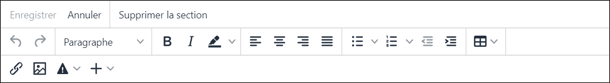
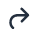
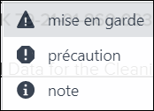

Non applicable pour Pinpoint Standalone Light.
La Barre d'outils de création est disponible lorsque vous ajoutez ou modifiez une section.
Barre d'outils de création
| Component | Description |
|---|---|
| Enregistrer | Cliquez sur ce bouton pour enregistrer vos modifications. |
| Annuler | Cliquez sur ce bouton pour annuler vos modifications. |
| Supprimer la section | Cliquez sur ce bouton pour supprimer la section. |
| Annuler | Cliquez sur cette icône pour annuler vos modifications. |
 Rétablir |
Cliquez sur cette icône pour refaire vos modifications. |
| Options de style | Sélectionnez les options de style pour mettre en forme votre contenu:
|
| Ajouter un lien | Cliquez sur cette icône pour ajouter un lien. Faire référence à Ajouter un lien. |
| Cliquez sur cette icône pour sélectionner un graphique existant à ajouter. Faire référence à Insérer une image. | |
| Insérer mise en garde et précaution | Cliquez sur la flèche vers le bas et sélectionnez une option dans le menu
déroulant:  Faire référence à Insérer mise en garde/précaution/note. |